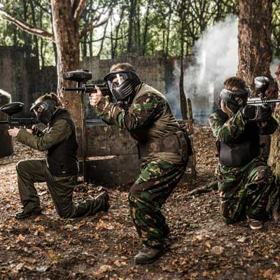
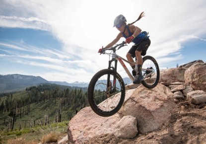
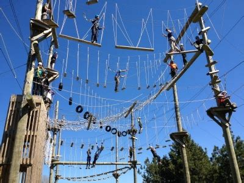

| Image of Activity | Description of Activity |
|---|---|
|  | Set in a cordoned off area of the forest, Crazy Paintball offers gas power action to anyone from aged16 upwards through a range of different paintball games including Capture the Flag and simple team elimination death match. We provide all the equipment, with Paintballs costing £5 for 500 and £9 for 1000, Grenades are £4 each and a full safety briefing is provided at start of day and games are supervised by highly trained safety officers with full first aid qualifications. |
|  | You can hire a bike and safety gear from out bike rental outlet to allow you to explore the forest area on one of our dedicated cycle paths. We provide a range of different bikes including children’s bike and tandems. All bikes cost from £10 per day and helmets £5 per day. We also sell other items such as gloves and water bottles in the shop. There is a £40 refundable deposit on bikes. |
|  | Our tree based adventure ropes course is a truly spectacular journey. Whether you are a novice adventurer or a serial adrenalin junkie our courses, which can vary vary from 3m to 14m above the ground, will certainly delight and challenge you. The courses are suitable for anyone over 1.4m tall (about 10yrs old). |